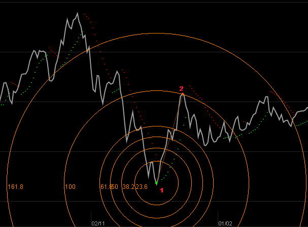

Fibonacci
Trong phân tích kỹ thuật, Fibonacci được sử dụng để vẽ các đường mà khoảng cách của chúng có các tỉ lệ tuân theo tỉ lệ Fibonacci.
Tỉ lệ Fibonacci (%): 0, 23.6, 38.2, 50.0, 61.8, 100, 161.8, ...
Lý luận của phương pháp này là trong cuộc sống tự nhiên có rất nhiều cá thể, sự kiện ngẫu nhiên tuân theo tỉ lệ Fibonacci. Do đó giá chứng khoán cũng có thể ẩn chứa dãy Fibonacci trong đó. Thể hiện của dãy Fibonacci đối với giá cổ phiếu có thể là mức giá (mức kháng cự, hỗ trợ) hoặc thời điểm đảo chiều giá.
Cách vẽ Fibonacci
Ngoại trừ Fibonacci Projection, các đường Fibonacci khác đều được vẽ chỉ bởi 2 điểm tọa độ: điểm gốc và điểm tại tỉ lệ 100%.
Cách vẽ Fibonacci như sau:
- Xác định một sóng trên đồ thị giá để làm cở sở. Đặt 2 tọa độ của Fibonacci tại 2 điểm đáy + đỉnh hoặc đỉnh + đáy.
- Giả sử ta chọn sóng lên làm cơ sở, khi đó đặt điểm gốc của Fibonacci tại điểm đáy, sau đó kéo điểm thứ 2 đến đỉnh của sóng. Tức là điểm tỉ lệ 100% sẽ trùng vào đỉnh của sóng cơ sở. Bạn cũng có thể đặt điểm tỉ lệ 50%, 68% hay 100% vào đỉnh của sóng tùy theo quan điểm của bạn.
- Sau khi vẽ xong, các đường tỉ lệ Fibonacci sẽ là cơ sở để dự đoán các điểm "nhạy cảm" của giá hoặc ngưỡng hỗ trợ/kháng cự...
Cách vẽ Fibonacci Projection: Để vẽ Fibonacci Projection thì cần chọn 3 tọa độ. Cách chọn tọa độ 1&2 giống như đã làm với các Fibonacci thông thường. Tọa độ thứ 3 sẽ là điểm để chiếu sóng cơ sở. Ví dụ sóng cơ sở là sóng lên (tọa độ 1&2 lần lượt là đáy và đỉnh), khi đó tọa độ thứ 3 sẽ là đáy mà bạn muốn chọn để chiếu sóng cơ sở.
Đối với Fibonacci Time/Fan/Arc thì 2 tọa độ để vẽ Fibonacci không nhất thiết phải là đáy+đỉnh hoặc đỉnh+đáy của một con sóng. Nó có thể là 2 đáy, 2 đỉnh hoặc 2 điểm nào đó trên đồ thị giá mà bạn cho là đủ nhạy cảm.
Ứng dụng
Fibonacci Fan/Arc/Retracement/Projection: Các đường tỉ lệ được ứng dụng để xác định ngưỡng kháng cự/hỗ trợ.
Fibonacci Time: Các đường tỉ lệ được dùng để dự đoán thời điểm "nhạy cảm" mà có thể gây đảo chiều giá.
Một số ví dụ minh họa
Fibonacci Retracement
Fibonacci Time
Fibonacci Arc

Fibonacci Fan
Fibonacci Projection